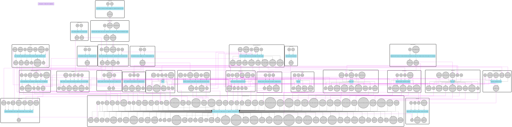
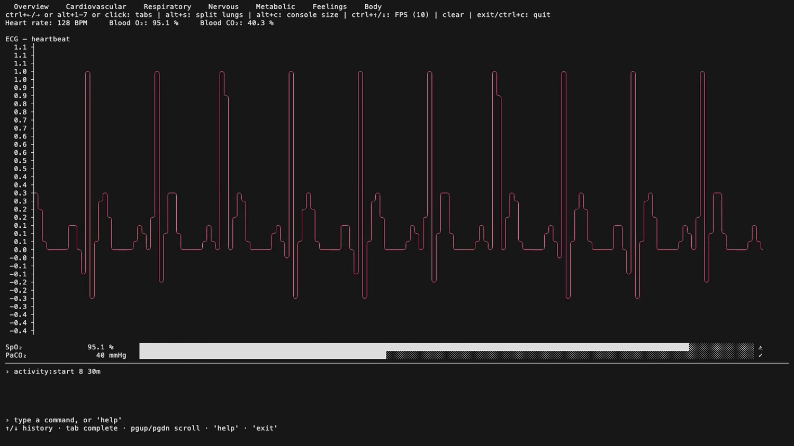
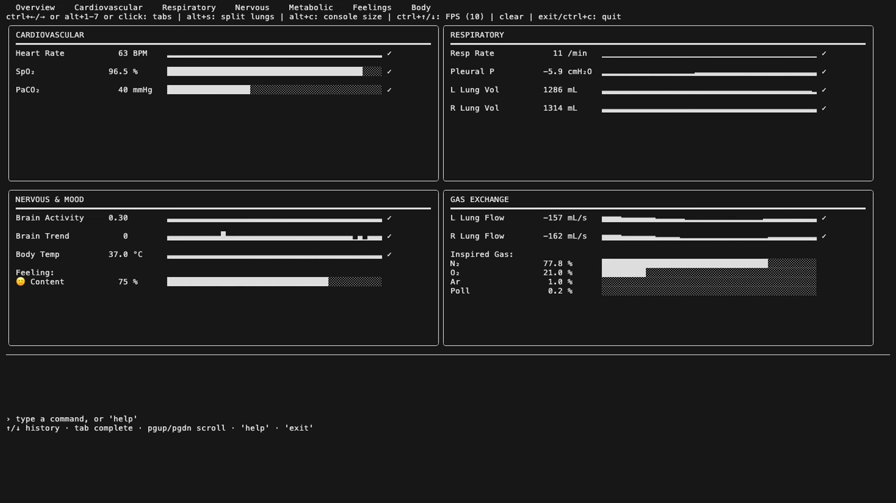
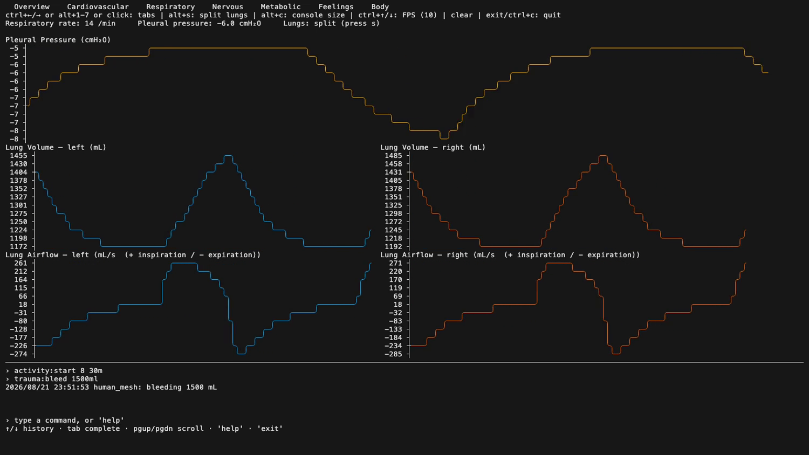
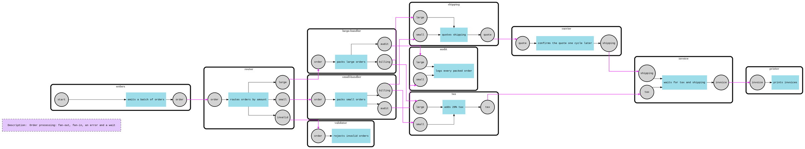
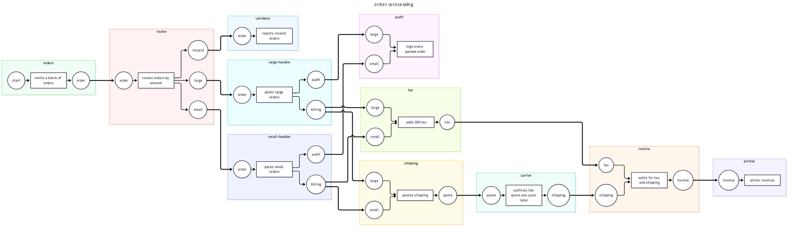
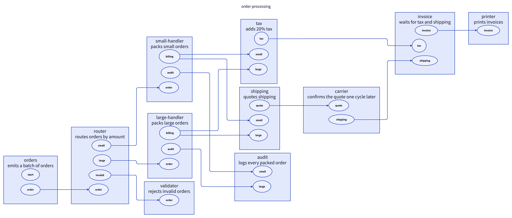
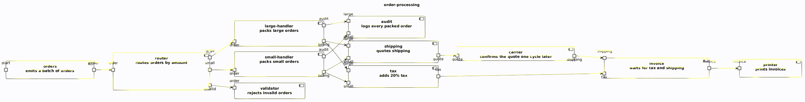
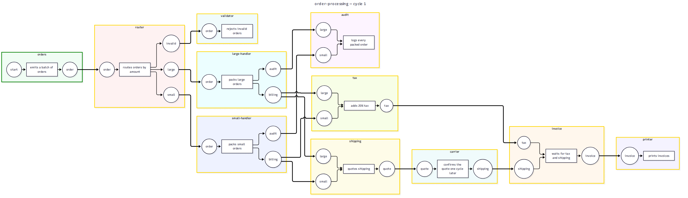
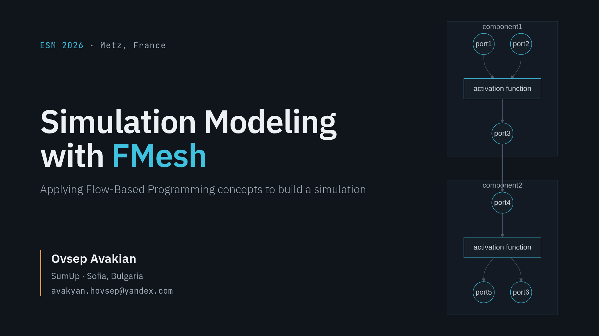

October 19, 2026
FMesh Status Update: October 2026
It has been a busy couple of months, and most of it didn't fit into a single topic post. So here is a status update instead: what's new in the little FMesh ecosystem from August to October.
- Human Body Simulation: done
- FMesh: new features, API changes, performance
- fmesh-export
- fmesh-hub
- First conference
- What's next
Human Body Simulation: done
The human body simulation is done. Not finished, because you can never finish a human body. I just stopped developing it.
The final state: the body is a mesh of 26 components (organs, distributed tissues, controllers and physiology hubs), wrapped as one component inside a habitat mesh with time, air and sun. All communication is signals, and no component shares state with another.

There is a terminal dashboard with a command prompt. You can feed the human, make him run, open a wound, change the air he breathes, and schedule such commands as scenarios. A test suite checks the model against textbook numbers.



This is the biggest simulation built on FMesh so far, and working on it was the main source of framework improvements in the next section. For example, livelock detection was added because the organs were waiting for each other, and deterministic runs were added because the same body produced different numbers on different runs.
The simulation is in the examples repo. Clone it, run go run . in simulation/life and play with it.
FMesh: new features, API changes, performance
Since the last post, FMesh went from v1.12 to v1.18, six releases in two months. Most of them contain breaking changes. FMesh is still pre-production, and I prefer to fix the API now instead of keeping bad decisions forever. The changelog has before/after code for every change, so here is only the important part.
Context everywhere (#238). Run, activation functions and hooks take a context. The time limit becomes a deadline on it.
// before
ri, err := fm.Run()
component.WithActivationFunc(
func(this *component.Component) error { ... })
// after
ri, err := fm.Run(ctx)
component.WithActivationFunc(
func(ctx context.Context, this *component.Component) error { ... })Deterministic runs (#238, #250). Ports are traversed in port-name order, components in component-name order, signals in arrival order. Same input, same output.
component.WithInputs("i1", "i2", "i3")
// this.Inputs().Signals() reads i1, then i2, then i3. Every run.
// Before: map order, so 200 identical runs could give 4 different results.Livelock detection (#238, #288). A mesh where every active component waits for inputs stops after two cycles, and the error names what is stuck.
_, err := fm.Run(ctx)
errors.Is(err, fmesh.ErrLivelockDetected) // true
// livelock detected: no progress for 2 consecutive cycles, stopped at cycle #2
// "joiner" is waiting: empty input ports [b]
fmesh.New("mesh", fmesh.WithLivelockThreshold(5))
fmesh.New("mesh", fmesh.WithoutLivelockDetection())Labels and scalars became metadata (#253, #294). One Meta() store instead of Labels() and Scalars(). A value can be a string, any number, a bool or a named type. Needs Go 1.27.
// before
fm.Labels().Set("env", "prod")
fm.Scalars().Set("version", 2)
v, err := c.Labels().Value("env")
// after
fm.Meta().Set("env", "prod").Set("version", 2)
v, err := c.Meta().Value[string]("env")Typed payloads are methods (#252). Generic methods in Go 1.27 let the typed accessors move from package functions to methods.
// before
n, err := signal.As[int](sig)
n, err := signal.As[int](this.InputByName("in").Signals().First())
// after
n, err := sig.As[int]()
n, err := this.InputByName("in").Signals().FirstAs[int]()Fewer hooks (#255). Component activation hooks are only BeforeActivation and AfterActivation. The outcome hooks are removed, branch on the result instead. A panic in a hook is recovered.
// before
h.OnError(func(ctx context.Context, ac *component.ActivationContext) error {
return ac.Component.ClearInputs(ctx)
})
// after
h.AfterActivation(func(ctx context.Context, ac *component.ActivationContext) error {
if !ac.Result.IsError() {
return nil
}
return ac.Component.ClearInputs(ctx)
})Retries (#262, #265). An activation that returns an error can be retried. A panic is never retried.
component.New("fetch",
component.WithRetry(3), // up to 3 attempts
component.WithRetryIf(func(ctx context.Context, attempt int, err error) bool {
time.Sleep(time.Duration(attempt) * time.Second) // backoff
return errors.Is(err, ErrTemporary) // retry only temporary errors
}),
...
)Config through options only (#256). WithConfig replaced the whole configuration, and every field you did not set became "no limit". It is removed.
// before
fmesh.New("m", fmesh.WithConfig(fmesh.Config{CyclesLimit: 100})) // silently removed the time limit
// after
fmesh.New("m", fmesh.WithCyclesLimit(100)) // every other setting keeps its defaultOne iterator (#296). Every container has one All() that returns iter.Seq. ForEach, Each, AllOrdered and the slice and map variants are gone.
// before
err := p.Signals().ForEach(func(s *signal.Signal) error { use(s); return nil })
for _, s := range p.Signals().All() { use(s) }
// after
for s := range p.Signals().All() { use(s) } // break and return work as usual
signals := slices.Collect(p.Signals().All()) // when you need a slicePerformance (#289, #290, #295). Activations run on a worker pool instead of one goroutine per component, a run allocates about half as much memory and finishes roughly 30% faster.
fmesh.New("m", fmesh.WithMaxConcurrency(4)) // default is GOMAXPROCS
fmesh.New("m", fmesh.WithUnlimitedConcurrency()) // the old behaviorSmaller API (#250, #292, #296). Methods with no callers were removed, and collections share one vocabulary. The compiler finds every call site, and the changelog says what replaced it.
// before
first := fm.Components().Any()
if result.ActivationError() != nil { ... }
// after
first := fm.Components().First()
if result.Err() != nil { ... }Release tags are plain semver (release guard). A suffix in the tag makes Go treat the release as a pre-release, and go get skips pre-releases. 36 tags were never served because of this. The codename is in the release title now.
v1.11.1-Shirak // pre-release for Go, go get skips it
v1.12.0 // served; the codename "Kotayk" is in the release titleIf you are on an older version, upgrade one release at a time and follow the compiler. Every breaking entry in the changelog ends with a migration checklist.
fmesh-export
Exporters used to live in two places: a DOT exporter in a separate fmesh-graphviz repo and a JSON plugin inside FMesh. Both were wrong. An exporter only reads a mesh, so it should not be a plugin, and one repo per format does not scale. All of them moved to one new module, fmesh-export, one package per format:
- JSON and YAML, for tools and for unmarshalling into a
Meshstruct - Graphviz DOT, the format used in all previous posts
- Mermaid, which GitHub renders directly in markdown
- D2
- PlantUML
Here is one mesh, an order processing pipeline with fan-out, fan-in, an error and a wait, exported in each diagram format:




Every exporter has the same shape. Export(fm) returns the structure. ExportCycle(fm, c) returns the structure colored by the results of one cycle, so a run can be replayed as an animation. All of them implement one export.Exporter interface, so code that does not care about the format can accept any of them. An exporter never changes the mesh, and equal meshes give byte-identical output. CI renders a showcase mesh in every diagram format on each merge, so you can see the result without installing anything. FMesh itself got a Walk(visitor) method for this. If you want to add a format, the D2 package is the template to copy.

fmesh-hub
This one is an idea more than a repo. As the ecosystem grows, I want one place to find everything built for FMesh (plugins, exporters, tools) and everything built with FMesh (libraries and applications that are a mesh inside, like a finite state machine or a rule engine). A registry organized by category, not a list of links on a wiki page.
Some of this already exists as examples. The state machine and the rule engine are a few hundred lines each, and the sim library the body simulation is built on lives in the same repo. The hub is where these will move when they stop being examples. Right now fmesh-hub is only a README. If you built something with FMesh and want it listed, open an issue.
First conference
On October 21 I will present FMesh at ESM 2026, the 40th European Simulation and Modelling Conference, in Metz, France. It is an academic conference, not an IT one, and it is my first. The audience is researchers and engineers who build simulation models, and most of them have never heard about Flow-Based Programming or about a Go library that implements it.

The tutorial is called "Building Simulation Models with Flow-Based Programming using FMesh". I will give it online. After the conference I will share the slides and what I learned from the questions in a follow-up post.
What's next
Three things. Polish FMesh to get it into the awesome-go list. Work on fmesh-hub. And build simulation-related tooling, because that is where FMesh is most useful today.
Make simulations, not war!